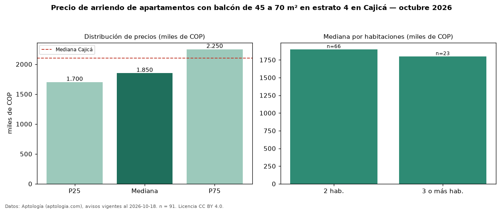

Precio de arriendo de apartamentos con balcón de 45 a 70 m² en estrato 4 en Cajicá — octubre 2026
En Cajicá, la mediana de canon mensual de apartamentos con balcón de 45 a 70 m² en estrato 4 es COP 1,85 millones, según 91 avisos vigentes. Frente a la mediana de los apartamentos con balcón en estrato 4 en arriendo de Cajicá (COP 2,33 millones, n = 170), queda 20 % por debajo; este segmento reúne el 54 % de esos avisos. Por metro cuadrado, la mediana es COP 32.692/m² al mes (n = 91), 4 % por debajo de los apartamentos con balcón en estrato 4 en arriendo de Cajicá (COP 34.059/m²). El área mediana anunciada es 58 m². El segmento con más oferta es el de 2 habitaciones (66 avisos, mediana COP 1,90 millones); pasar de 2 habitaciones a 3 o más habitaciones cambia la mediana −5 %. La administración mediana declarada es COP 300.000 al mes (n = 35), aparte del canon. La mediana de todos los apartamentos en arriendo de Cajicá es COP 2,10 millones (−12 % de diferencia). La mitad central de los avisos va de COP 1,70 millones a COP 2,25 millones (razón 1,3), una dispersión baja. Datos: Aptología (aptologia.com), CC BY 4.0 — https://www.aptologia.com/arriendo/cajica. Archivos: PDF, CSV con las cifras y gráfica PNG.

| Avisos únicos | 91 |
|---|---|
| Percentil 25 | COP 1.700.000 |
| Mediana | COP 1.850.000 |
| Percentil 75 | COP 2.250.000 |
| Mediana por m² | COP 32.692 |
Fuente: avisos vigentes de portales inmobiliarios recopilados por Aptología, deduplicados (mínimo 30 avisos únicos por celda). Precios pedidos, no cerrados. Fecha: 2026-10-18.